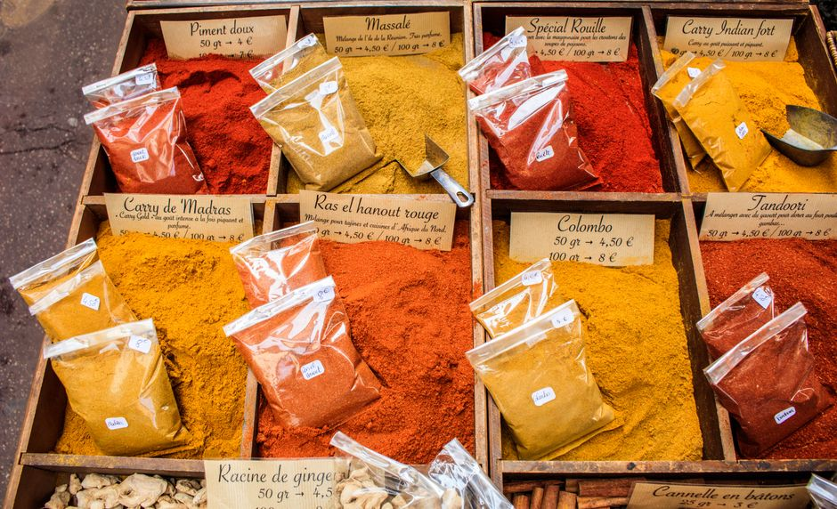

Comment optimiser son budget alimentaire en étudiant avec des astuces de cuisine

Photo: hitesh choudhary / Pexels
Optimiser son budget alimentaire en étudiant avec des astuces de cuisine
En tant qu'étudiant, gérer son budget alimentaire peut être un défi. Les repas pris au restaurant ou en drive peuvent s'avérer coûteux, et le budget alloué aux courses de supermarchés peut vite disparaître. Heureusement, de nombreuses astuces de cuisine peuvent vous aider à économiser et à manger sainement. Voici quelques stratégies efficaces à mettre en œuvre.
Établir un plan de repas
Avant chaque semaine, prenez le temps de planifier vos repas. Cela vous aidera à éviter les courses d'appoint et à utiliser tous les ingrédients que vous avez achetés. Créez une liste détaillée de ce que vous avez besoin pour chaque repas, et vérifiez chaque jour votre frigo et votre placard pour voir si vous avez déjà ce dont vous avez besoin.
Acheter en vrac

Photo: Edoardo Colombo / Pexels
Optez pour l'achat en vrac pour les légumes, les fruits, et les grains, qui sont généralement moins chers que les produits conditionnés. De plus, cela vous permet de choisir les produits de saison, qui sont souvent moins chers et plus sains.
Faire ses courses sur place
Au lieu de faire les courses dans un supermarché du centre-ville, visitez le marché local. Les produits y sont souvent moins chers, et vous pouvez discuter directement avec les vendeurs pour obtenir des conseils et des astuces.
Combiner les ingrédients pour des repas économiques
Créez une liste d'ingrédients clés que vous pouvez utiliser dans de nombreux repas. Par exemple, des carottes, des oignons et des poivrons peuvent être utilisés dans de nombreux plats. Cela vous permet de préparer des repas variés tout en utilisant les mêmes ingrédients.
Préparer ses repas à l'avance
Réservez une après-midi par semaine pour préparer vos repas pour la semaine suivante. Ce n'est pas seulement un excellent moyen d'économiser du temps, mais aussi de réduire les coûts. Vous pouvez préparer plusieurs plats à la fois, les congeler, et les réchauffer au fur et à mesure.
Économiser sur les produits laitiers
Pour réduire les coûts, pensez à acheter du lait en poudre ou des alternatives végétales comme le soja, les noix de cajou, ou les graines de chia. Ces options sont souvent moins chères et plus flexibles.
Utiliser des légumes secs et des grains
Les légumes secs et les grains sont des options économiques qui peuvent durer plusieurs semaines. Ils sont riches en nutriments et peuvent être utilisés dans de nombreux plats, y compris des salades, des soupes, et des casseroles.
Réduire la quantité de viande
La viande est souvent coûteuse, alors pourquoi ne pas réduire sa consommation? Essayez de remplacer la viande par des légumineuses, qui sont plus économiques et plus saines. Des options comme les lentilles, les haricots rouges, et les pois chiches peuvent être utilisées dans de nombreux plats.
Utiliser des aliments en fin de périgée
N'hésitez pas à utiliser des aliments qui approchent leur date de péremption. Il est souvent possible de les conserver correctement et de les utiliser avant qu'ils ne soient trop tard. Assurez-vous simplement de les conserver correctement et de les consommer rapidement.
Cookbooks gratuits ou à bas coût
Consacrez un peu de temps à rechercher des recettes à bas coût dans des cookbooks gratuits ou à bas prix. Des sites comme Allrecipes.com et Cookpad.com proposent des milliers de recettes gratuites qui peuvent être adaptées à votre budget.
Laver et conserver vos légumes
Lavez et coupez vos légumes dès que vous les achetez. Cela vous permet d'utiliser vos légumes rapidement et de les congeler si vous n'en avez pas l'intention de consommer immédiatement. Cela réduit la perte d'aliments et peut vous aider à économiser de l'argent à long terme.
En mettant en œuvre ces conseils, vous pouvez non seulement économiser de l'argent, mais aussi manger sainement et varié. L'essentiel est de bien planifier et d'être créatif dans la manière dont vous utilisez vos ingrédients.
Produits recommandés
En tant que Partenaire Amazon, je réalise un bénéfice sur les achats remplissant les conditions requises.